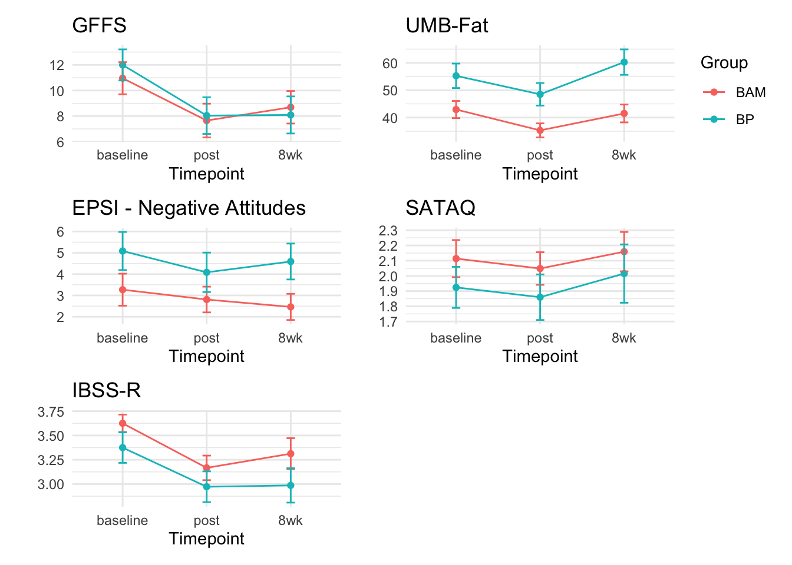

5 Intervention Effects KS
6 Intervention Effects
mean_list <- list()
for (i in target_vars) {
mean_df <- BAM_redcap_long_merged %>%
filter(!is.na(timepoint), id %in% completers) %>%
group_by(timepoint, group) %>%
summarise(mean = mean(!!sym(i), na.rm = TRUE), Variable = i) # Use !!sym(i) to refer to the variable name dynamically
mean_list[[i]] <- mean_df
}`summarise()` has grouped output by 'timepoint'. You can override using the
`.groups` argument.
`summarise()` has grouped output by 'timepoint'. You can override using the
`.groups` argument.
`summarise()` has grouped output by 'timepoint'. You can override using the
`.groups` argument.
`summarise()` has grouped output by 'timepoint'. You can override using the
`.groups` argument.
`summarise()` has grouped output by 'timepoint'. You can override using the
`.groups` argument.# Create a data frame with the results
mean_df <- do.call(rbind, mean_list)
save(mean_df, file = 'tabs/results_tables.RData')
mean_df$mean <- round(mean_df$mean, 2)
| group | Variable | Cohens_d_baseline_post | Cohens_d_baseline_8_week | |
|---|---|---|---|---|
| gffs_sum_25.1 | BP | gffs_sum_25 | -0.5050240 | -0.3524653 |
| gffs_sum_25.2 | BAM | gffs_sum_25 | -0.6084333 | -0.5972547 |
| umb_total_sum_25.1 | BP | umb_total_sum_25 | -0.5241664 | -0.0883219 |
| umb_total_sum_25.2 | BAM | umb_total_sum_25 | -0.3209451 | 0.2237849 |
| epsi_neg_obese_25.1 | BP | epsi_neg_obese_25 | -0.1328859 | -0.2309433 |
| epsi_neg_obese_25.2 | BAM | epsi_neg_obese_25 | -0.2243805 | -0.1158431 |
| sataq_average_25.1 | BP | sataq_average_25 | -0.1115387 | 0.0709119 |
| sataq_average_25.2 | BAM | sataq_average_25 | -0.0921853 | 0.1118723 |
| ibssr_mean_25.1 | BP | ibssr_mean_25 | -0.8204996 | -0.4733329 |
| ibssr_mean_25.2 | BAM | ibssr_mean_25 | -0.5206874 | -0.4748678 |
| timepoint | group | mean | Variable |
|---|---|---|---|
| 8wk | BAM | 8.692308 | gffs_sum_25 |
| 8wk | BP | 8.090909 | gffs_sum_25 |
| baseline | BAM | 10.961538 | gffs_sum_25 |
| baseline | BP | 12.000000 | gffs_sum_25 |
| post | BAM | 7.653846 | gffs_sum_25 |
| post | BP | 8.041667 | gffs_sum_25 |
| 8wk | BAM | 41.500000 | umb_total_sum_25 |
| 8wk | BP | 60.250000 | umb_total_sum_25 |
| baseline | BAM | 42.937500 | umb_total_sum_25 |
| baseline | BP | 55.250000 | umb_total_sum_25 |
| post | BAM | 35.312500 | umb_total_sum_25 |
| post | BP | 48.500000 | umb_total_sum_25 |
| 8wk | BAM | 2.461539 | epsi_neg_obese_25 |
| 8wk | BP | 4.590909 | epsi_neg_obese_25 |
| baseline | BAM | 3.269231 | epsi_neg_obese_25 |
| baseline | BP | 5.083333 | epsi_neg_obese_25 |
| post | BAM | 2.807692 | epsi_neg_obese_25 |
| post | BP | 4.083333 | epsi_neg_obese_25 |
| 8wk | BAM | 2.159091 | sataq_average_25 |
| 8wk | BP | 2.015151 | sataq_average_25 |
| baseline | BAM | 2.113636 | sataq_average_25 |
| baseline | BP | 1.924242 | sataq_average_25 |
| post | BAM | 2.048296 | sataq_average_25 |
| post | BP | 1.859849 | sataq_average_25 |
| 8wk | BAM | 3.312500 | ibssr_mean_25 |
| 8wk | BP | 2.986111 | ibssr_mean_25 |
| baseline | BAM | 3.625000 | ibssr_mean_25 |
| baseline | BP | 3.375000 | ibssr_mean_25 |
| post | BAM | 3.166667 | ibssr_mean_25 |
| post | BP | 2.972222 | ibssr_mean_25 |
# A tibble: 10 × 8
Measure Construct group `Mean baseline` `Mean post` `Mean 8wk`
<chr> <chr> <chr> <chr> <chr> <chr>
1 GFFS Fatphobia Body… 12 (5.94) 8.04166666… 8.0909090…
2 GFFS Fatphobia BAM 10.96153846153… 7.65384615… 8.6923076…
3 UMB-Fat Anti-fat bias Body… 55.25 (21.88) 48.5 (20.1… 60.25 (22…
4 UMB-Fat Anti-fat bias BAM 42.9375 (15.91) 35.3125 (1… 41.5 (16.…
5 EPSI Subscale Negative attitude… Body… 5.083333333333… 4.08333333… 4.5909090…
6 EPSI Subscale Negative attitude… BAM 3.269230769230… 2.80769230… 2.4615384…
7 SATAQ Thin ideal intern… Body… 1.924242424242… 1.85984848… 2.0151515…
8 SATAQ Thin ideal intern… BAM 2.113636363636… 2.04829545… 2.1590909…
9 IBSS-R Thin ideal intern… Body… 3.375 (0.77) 2.97222222… 2.9861111…
10 IBSS-R Thin ideal intern… BAM 3.625 (0.46) 3.16666666… 3.3125 (0…
# ℹ 2 more variables: `Baseline to Post (Cohen's d)` <dbl>,
# `Baseline to 8wk (Cohen's d)` <dbl>| Measure | Construct | group | Mean baseline | Mean post | Mean 8wk | Baseline to Post (Cohen's d) | Baseline to 8wk (Cohen's d) |
|---|---|---|---|---|---|---|---|
| GFFS | Fatphobia | Body Project | 12 (5.94) | 8.04166666666667 (7.02) | 8.09090909090909 (7.1) | -0.51 | -0.35 |
| GFFS | Fatphobia | BAM | 10.9615384615385 (6.39) | 7.65384615384615 (6.7) | 8.69230769230769 (6.49) | -0.61 | -0.60 |
| UMB-Fat | Anti-fat bias | Body Project | 55.25 (21.88) | 48.5 (20.14) | 60.25 (22.79) | -0.52 | -0.09 |
| UMB-Fat | Anti-fat bias | BAM | 42.9375 (15.91) | 35.3125 (13.04) | 41.5 (16.63) | -0.32 | 0.22 |
| EPSI Subscale | Negative attitudes toward obesity | Body Project | 5.08333333333333 (4.37) | 4.08333333333333 (4.54) | 4.59090909090909 (4.12) | -0.13 | -0.23 |
| EPSI Subscale | Negative attitudes toward obesity | BAM | 3.26923076923077 (3.83) | 2.80769230769231 (3.07) | 2.46153846153846 (3.13) | -0.22 | -0.12 |
| SATAQ | Thin ideal internalization | Body Project | 1.92424242424242 (0.66) | 1.85984848484848 (0.73) | 2.01515151515152 (0.94) | -0.11 | 0.07 |
| SATAQ | Thin ideal internalization | BAM | 2.11363636363636 (0.62) | 2.04829545454545 (0.55) | 2.15909090909091 (0.66) | -0.09 | 0.11 |
| IBSS-R | Thin ideal internalization | Body Project | 3.375 (0.77) | 2.97222222222222 (0.78) | 2.98611111111111 (0.87) | -0.82 | -0.47 |
| IBSS-R | Thin ideal internalization | BAM | 3.625 (0.46) | 3.16666666666667 (0.64) | 3.3125 (0.81) | -0.52 | -0.47 |
-0.51
###Calculating reliability###
library(ltm)Loading required package: MASS
Attaching package: 'MASS'The following object is masked from 'package:patchwork':
areaThe following object is masked from 'package:dplyr':
selectLoading required package: msmLoading required package: polycorgffs_variables <- c("gffs_1_fear_fat", "gffs_2_fear_little_gain", "gffs_3_overweight_risk",
"gffs_4_cannot_live", "gffs_5_fat_worst", "gffs_6_concentrate",
"gffs_7_painful_thought", "gffs_8_energy_control_weight",
"gffs_9_eat_lose_control", "gffs_10_stay_hungry")
gffs_data <- BAM_redcap_long_merged[, gffs_variables]
cronbach.alpha(gffs_data, na.rm = TRUE)
Cronbach's alpha for the 'gffs_data' data-set
Items: 10
Sample units: 204
alpha: 0.884umbfat_variables <- c("umb_1_rights_privileges","umb_2_fat_person","umb_3_fat_attractive", "umb_4_fat_romance","umb_5_fat_hygiene","umb_6_fat_sexy","umb_7_fat_bad","umb_8_fat_roommate",
"umb_9_fat_turn_off","umb_10_fat_pleasant","umb_11_fat_salary","umb_12_fat_dishonest", "umb_13_fat_perspective", "umb_14_fat_educational_opportunity", "umb_15_fat_needs_of_others",
"umb_16_fat_sloppy","umb_17_fat_like","umb_18_fat_equal_housing","umb_19_fat_conversation",
"umb_20_fat_worship")
umbfat_data <- BAM_redcap_long_merged[, umbfat_variables]
cronbach.alpha(umbfat_data, na.rm = TRUE)
Cronbach's alpha for the 'umbfat_data' data-set
Items: 20
Sample units: 204
alpha: 0.914sataq_variables <- c("sataq_1_athletic","sataq_2_muscular","sataq_3_thin","sataq_4_no_fat","sataq_5_look_thin","sataq_6_look_athletic","sataq_7_think_athletic","sataq_8_look_lean","sataq_9_little_fat","sataq_10_look_muscular","sataq_11_family_thin","sataq_12_family_improve","sataq_13_family_fat","sataq_14_family_shape","sataq_15_peer_thin","sataq_16_peer_improve","sataq_17_peer_shape","sataq_18_peer_body_fat","sataq_19_media_shape" ,"sataq_20_media_thin","sataq_21_media_look","sataq_22_media_fat")
sataq_data <- BAM_redcap_long_merged[, sataq_variables]
cronbach.alpha(sataq_data, na.rm = TRUE)
Cronbach's alpha for the 'sataq_data' data-set
Items: 22
Sample units: 204
alpha: 0.88epsi_variables <- c("epsi_1_clothes_fit","epsi_2_exclude_unhealthy","epsi_3_ate_not_hungry","epsi_4_dont_eat_alot","epsi_5_exercise_alot","epsi_6_surprised_little","epsi_7_muscle_building","epsi_8_push_myself","epsi_9_snack","epsi_10_full_easily","epsi_11_diuretic","epsi_12_different_outift","epsi_13_laxatives","epsi_14_obese_self_control","epsi_15_steroids","epsi_16_diet_tea","epsi_17_diet_pill","epsi_18_body_looks","epsi_19_uncomfortably_full","epsi_20_overweight_lazy","epsi_21_count_calories","epsi_22_plan_exercise","epsi_23_butt_too_big","epsi_24_size_thighs","epsi_25_shape_different","epsi_26_overweight_tight","epsi_27_made_vomit","epsi_28_unnotice_amount_ate","epsi_29_muscle_supplement","epsi_30_overweight_unattractive","epsi_31_strenuous_exercise","epsi_32_muscles_small","epsi_33_got_full","epsi_34_unsatisfied_hips","epsi_35_protein_supplements","epsi_36_encouraged_eat_more","epsi_37_not_resist","epsi_38_digusted_obesity","epsi_39_stuffed","epsi_40_avoid_calories","epsi_41_exercised_exhaustion","epsi_42_diuretics","epsi_43_skip_2_meals","epsi_44_auto_pilot","epsi_45_food_short_time")
epsi_data <- BAM_redcap_long_merged[, epsi_variables]
cronbach.alpha(epsi_data, na.rm = TRUE)
Cronbach's alpha for the 'epsi_data' data-set
Items: 45
Sample units: 204
alpha: 0.915ibssr_variables <- c("ibssr_slender","ibssr_in_shape","ibssr_tall","ibssr_lean","ibssr_shapely","ibssr_legs")
ibssr_data <- BAM_redcap_long_merged[, ibssr_variables]
cronbach.alpha(ibssr_data, na.rm = TRUE)
Cronbach's alpha for the 'ibssr_data' data-set
Items: 6
Sample units: 204
alpha: 0.88Effect sizes were calculated for both BAM and Body Project to assess if reductions in fatphobia, anti-fat bias, and thin ideal internalization differed between interventions across time points. To see effect sizes, means, and standard deviations for each group, see table XX.
Both BAM and Body Project interventions produced reductions in fatphobia (measured via the GFFS) between baseline and post session with medium effect sizes (BAM: d = -0.51; BP: d = -0.61), but Body Project outperformed BAM by maintaining the level of reduction from baseline to 8-week post session (d = -0.60) while the reduction was diminished for BAM participants to a small effect size (d = -0.35), thus disproving our hypothesis 2a.
Both the UMB-FAT and the EPSI “Negative Attitudes Toward Obesity” subscale were used to assess anti-fat bias. Hypothesis 2b was partially confirmed with BAM participants showing a medium reduction at baseline to post session (d = -0.52) while Body Project participants only demonstrated a small reduction (d = -0.32). Despite BAM participants not exhibiting a reduction between baseline and 8-week post session on the UMB-FAT (d = -0.09), Body Project participants showed an increase in anti-fat bias at this time point (d = 0.22). Nonetheless, BAM and Body Project did not differ in reductions on the EPSI subscale at either baseline to post session (BAM: d = -0.13; BP: d = -0.22) or baseline to 8-week post session (BAM: d = -0.23; BP: d = -0.12).
Thin ideal internalization was assessed using the SATAQ and IBSS-R measures. Neither BAM nor Body Project demonstrated a reduction on the SATAQ at either baseline to post session (BAM: d = -0.11; BP: d = -0.09) or baseline to 8-week post session (BAM: d = 0.07; BP: d = 0.11). Hypothesis 2c is further disproved as BAM participants showed greater reductions of thin ideal internalization on the IBSS-R at baseline to post session (d = -0.82) compared to Body Project participants (d = -0.52) while both interventions maintained a similar level of reduction from baseline to 8-week post session (BAM: d = -0.47; BP: d = -0.47).